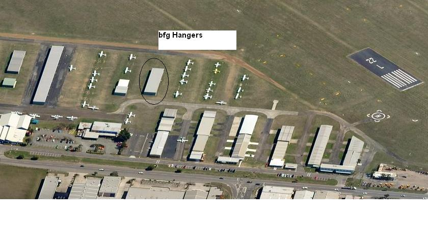

Brisbane Flying Group has a board of Directors comprising of eight members who all act in an honorary capacity. The Directors meet regularly to discuss and conduct the affairs of the group. Day-to-day issues are carried out by the Treasurer; Mark Crompton and Company Secretary; Greg Dunn.
The Annual General Meeting of the group is held each year in November/December, when the directors report to the shareholders. The election of directors takes place with three directors retiring each year by rotation and the future direction of the group is also discussed at this meeting.
The group owns a four place aero-port style hanger at Archerfield Airport where the aircraft are secured under cover. We currently rent the third and fourth bays out to offset our costs
Brisbane Flying Group is an incorporated company that was formed back in November 1972 and since 1980, the group had until recently only operated 1979 model Grumman AA5B 'Tigers' They had more than proved themselves as a simple, economical, robust and relatively speedy aircraft ideal for our purposes. Currently the group has 44 members. Due to the aging of the Grummans the Group has decided to move to later model aircraft with modern features in terms of safety, instrumentation. avionics and with lower maintenance costs and good spare part availability. To this end we now operate with late model Cessna 172S. Our aircraft are kept at Archerfield Airport in the Southern suburbs of Brisbane City, Queensland, Australia.
